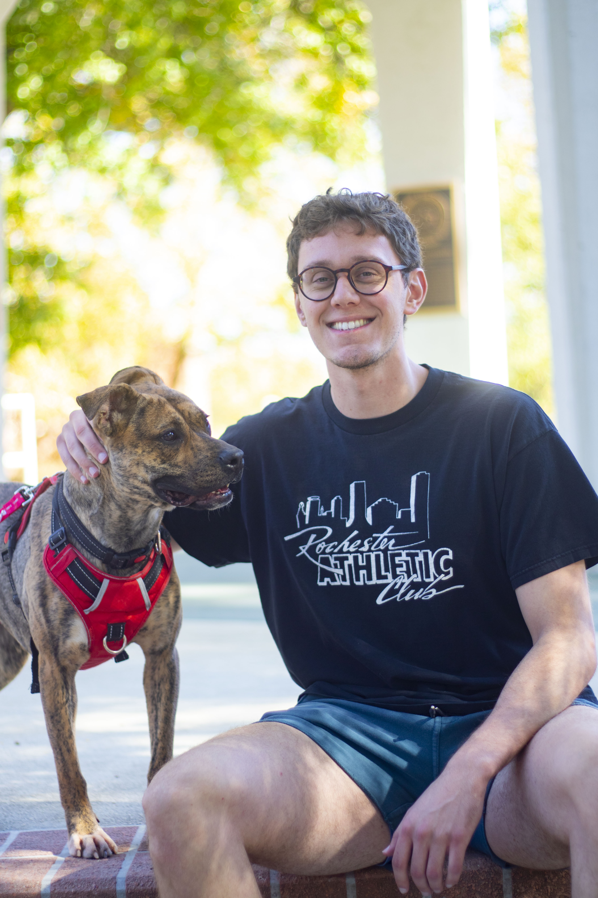

Driven digital media graduate passionate about photographyand graphic design, dedicated to crafting compelling visual narratives. I aim to create impactful images that resonate with viewers, collaborating with clients to bring their vision to life.

Jacob Day
I am an undergraduate student at Northwest Missouri State University, majoring in Digital Media. I will be graduating in December 2024, and then plan to start my career in Kansas City, MO.